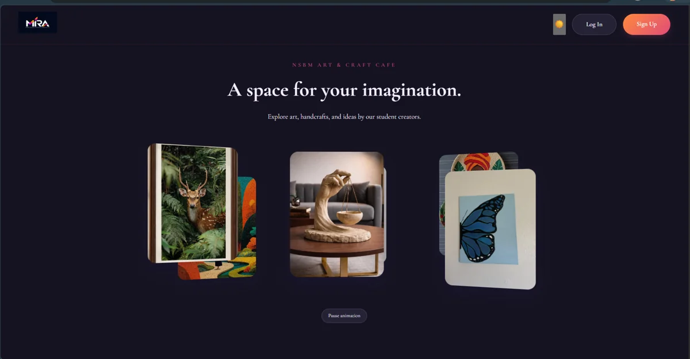
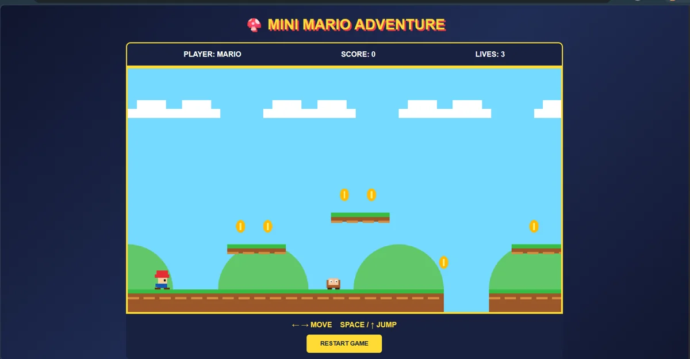

OPEN TO LEARNING & COLLABORATION
HELLO WORLD, I'M
Dinujaya
Abeysinghe.
Built with curiosity & code.
> Aspiring Software Engineer|
A second-year Computer Science undergraduate turning ideas into code and code into meaningful digital experiences.
{ creativity: true }
console.log('hello!')
✦ BUILD · LEARN · REPEAT
+
+
01 / INTRODUCTION
More than just code.
A LITTLE ABOUT MECurious mind.
Curious mind.
Creative builder.
I'm Dinujaya Abeysinghe, a second-year BSc (Hons) Computer Science undergraduate at NSBM Green University in Sri Lanka.
I love combining logical problem-solving with thoughtful design to build modern websites, interactive applications, and explore the possibilities of artificial intelligence.
I'm constantly learning, experimenting, and growing toward my goal of becoming a software engineer who builds technology that matters.
Let's connectCURRENTLY STUDYING
BSc (Hons) Computer Science
NSBM Green University · Year 02
WHAT DRIVES ME
Learn. Create. Innovate.
Turning curiosity into useful solutions
“
Turning Ideas into Code, and Code into Innovation.
02 / TOOLKIT
Technical Skills.
Tools and topics I work with.
CSS
JavaScript
Python
Java
Artificial Intelligence
Software Development
UI/UX Design
03 / SELECTED WORK
Ideas brought to life.
A mix of hands-on projects and concepts I'm exploring.

01 / WEBMira Artcraft Website
A creative website built for a university assignment, exploring frontend layout, visual design, and user-friendly content presentation.
Web DevelopmentUI Design

02 / GAMEMini Mario-Style Game
A browser-based platform game experimenting with keyboard controls, character movement, JavaScript logic, and interactive gameplay.
HTMLCSSJavaScript
03 / CONCEPT
AI
📊
✦
Student Performance Analysis System
An AI-focused educational concept exploring personalized feedback, academic insights, and more adaptive learning experiences.
AIEducationData Insights
More projects are on the way. Follow my journey on GitHub
04 / THE JOURNEY
Always a work in progress.
WHERE I AM
Building my foundation
Currently in my second year at NSBM Green University, strengthening my understanding of programming, software engineering, and computer science fundamentals.
2026 · SECOND-YEAR UNDERGRADUATE
WHERE I'M GOING
Creating meaningful software
My goal is to grow into a skilled software engineer, build more ambitious applications, explore intelligent technologies, and gain industry experience.
NEXT · PROJECTS, GROWTH & OPPORTUNITIES
05 / LET'S CONNECT OPEN TO OPPORTUNITIES
Have something in mind?
Whether you have a project idea, a career opportunity, or just want to say hello, I'd love to hear from you.
What brings you here?
✓
Send me an email Let's connect
Choose how you'd like to reach me.
Prefer to reach out directly?dinujayathisum2005@gmail.com